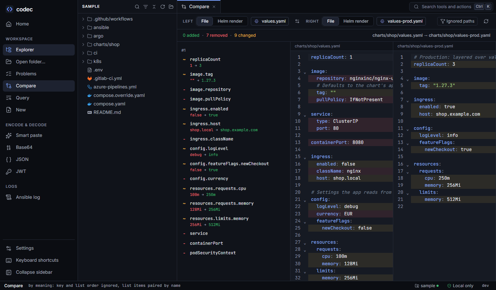
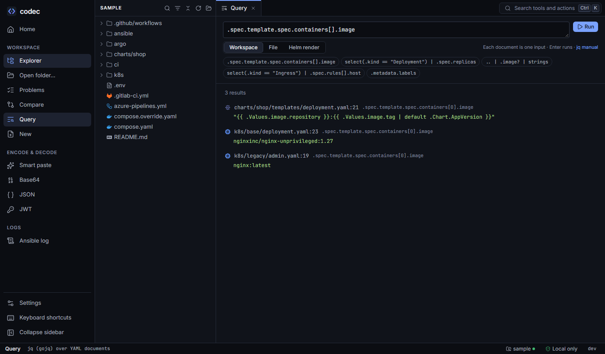

Compare and query
Two tools for questions across files: Compare diffs YAML by meaning rather than by line, and Query runs jq over the workspace, a file or a render and jumps to every result.
Compare#

values.yaml against values-prod.yaml: changes listed by path, both sides marked. Click a change to jump to it.What "by meaning" means#
- Key order doesn't count. Reordering a map is not a change.
- List order doesn't count where it doesn't matter. List items are paired by identity: containers, env vars, ports, volumes and volume mounts by
name, and similar items by their content. A renamed container is one change, not a removal and an addition. Lists where order matters (command,args) keep their order. - Documents pair up by kind, namespace and name, so a multi-document file can be compared with another regardless of document order. Two single-document files always pair.
- Changes are listed by path (
spec.template.spec.containers[name=app].image), as added, removed or changed with old and new values.
Both sides are compared by structure when each is a YAML or JSON mapping or list (JSON is YAML, so they mix). Anything else — plain text, logs, a lone value — or a side with syntax errors gets a line-by-line text diff. Compare as overrides this: Structure or Text. A text diff can ignore whitespace (indentation, runs of spaces, line endings) and ignore case.
What you can compare#
| Side | Example |
|---|---|
| A file | values.yaml vs values-prod.yaml; one document of a multi-document file vs another. Choose it with the search, drag it from the explorer onto a side, or use the explorer's right-click menu: Select for compare on one file, then Compare with … on another — or Ctrl+click two files and Compare selected. |
| What-if edits vs disk | "Compare what-if edits with disk" on a file with edits — the semantic view of your change. |
| A Helm render | The same chart with two profiles — what actually changes between dev and prod. |
| Pasted text | A live object (kubectl get deploy api -o yaml) against the file in the repo, or two API responses. Pick Paste for a side and paste into the box that opens. Two pasted sides need no folder: Compare text on Home or in the palette starts there. |
The × next to a side clears it; Clear empties both sides and the result. Ignored paths stay. Pasted text is never saved — it is gone after a reload — so clearing it offers Undo for a few seconds.
Ignoring noise#
Some differences are always noise: chart version labels, checksum annotations, generated names. Add their paths to Ignored paths (from the Compare view, from a change in the list, or in Settings). A pattern matches the whole path; * stands for any characters, dots included:
metadata.labels.helm.sh/chart
metadata.annotations.checksum/*
spec.template.spec.containers[*].imagePatterns are saved in your settings and used by the CLI too. Add live object noise fills in the fields a cluster adds to objects it returns (metadata.managedFields, resourceVersion, uid, creationTimestamp, generation, the last-applied annotation, status); save to use them.
Query#

Query runs jq expressions (through gojq, a pure-Go jq) where each YAML document is one input. Choose the scope — the whole workspace, the current file, or a Helm render with a profile — press Enter, and click any result to open the file at that line. Example expressions are one click away:
.spec.template.spec.containers[].image # every image
select(.kind == "Deployment") | .spec.replicas # replicas per deployment
select(.kind == "Ingress") | .spec.rules[].host # every host
.. | .image? | strings # any "image" field anywhereResults carry their position because codec asks jq for the path of every result and maps it back to the YAML tree. Environment variables are not available to expressions.
From the command line#
codec yaml diff charts/shop/values.yaml charts/shop/values-prod.yaml # exit 2 when different
#1
~ replicaCount: 1 → 3
~ image.tag: "" → 1.27.3
- image.repository: nginxinc/nginx-unprivileged
~ ingress.enabled: false → true
~ config.logLevel: debug → info
codec yaml diff a.yaml b.yaml --ignore 'metadata.labels.helm.sh/chart' --json
codec yaml diff a.yaml b.yaml --text # a line diff instead
codec yaml query 'select(.kind == "Deployment") | .spec.replicas' .
charts/shop/templates/deployment.yaml:8: "{{ .Values.replicaCount }}"
k8s/base/deployment.yaml:8: 1
k8s/overlays/prod/replicas.yaml:6: 3